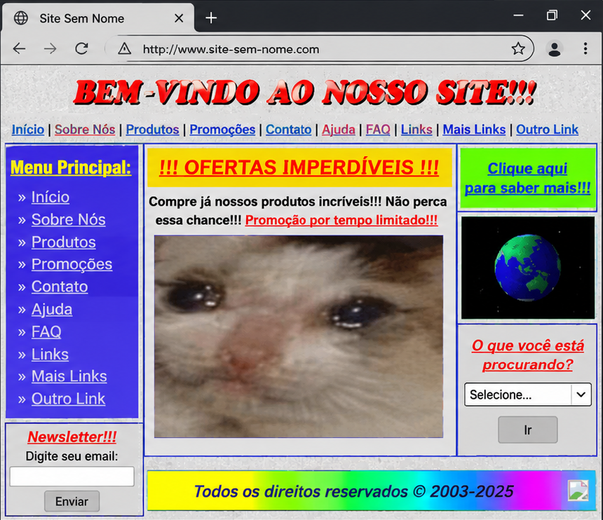

As 10 heurísticas de Nielsen
Regras práticas criadas por Jakob Nielsen em 1994. Clique em uma heurística pra ver um exemplo.
1Status do sistema
Mostrar o que está acontecendo. Ex.: a barra que enche enquanto um arquivo é enviado.
2Mundo real
Usar palavras e ícones que a pessoa já conhece. Ex.: o ícone de carrinho nas lojas online.
3Controle e liberdade
Sempre ter como desfazer ou voltar. Ex.: o "desfazer envio" de alguns e-mails.
4Consistência
Botões iguais fazem a mesma coisa em todas as páginas. Ex.: o menu igual em todo este site.
5Prevenção de erros
Evitar o erro antes que ele aconteça. Ex.: perguntar "tem certeza?" antes de apagar algo.
6Reconhecer, não lembrar
Deixar as opções à vista, sem obrigar a decorar. Ex.: a lista de pesquisas recentes.
7Flexibilidade
Atalhos para quem já é experiente. Ex.: Ctrl+C e Ctrl+V.
8Design minimalista
Mostrar só o que importa, sem poluir a tela. Ex.: a página inicial do Google.
9Corrigir erros
Mensagens de erro claras, que dizem como resolver. Ex.: "a senha precisa ter 8 caracteres".
10Ajuda
Ter ajuda fácil de achar quando precisar. Ex.: a seção de perguntas frequentes.
Um bom site não faz você parar pra pensar onde clicar.
A ideia central de Não me faça pensar, de Steve Krug

Exemplo bom
- Menu com poucos links e nomes claros (heurística 6)
- Um único botão principal, "Ver ofertas", que se destaca do resto (heurística 8)
- O carrinho mostra quantos itens tem (heurística 1)

Exemplo ruim
- Links repetidos e com nomes vagos, como "Mais Links" e "Outro Link" (heurísticas 4 e 6)
- Cores fortes e imagens sem relação com o conteúdo (heurística 8)
- "Clique aqui para saber mais!!!" não diz para onde o link leva (heurística 2)
Teste rápido · 1 de 3